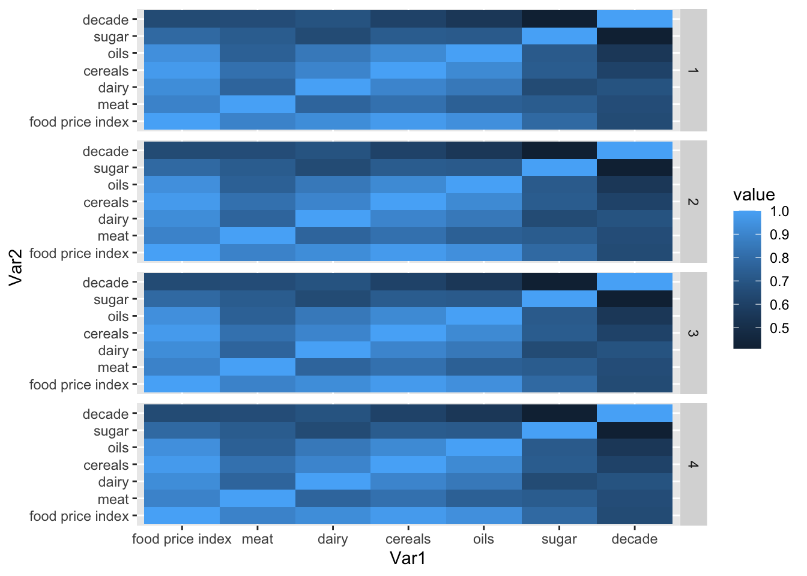
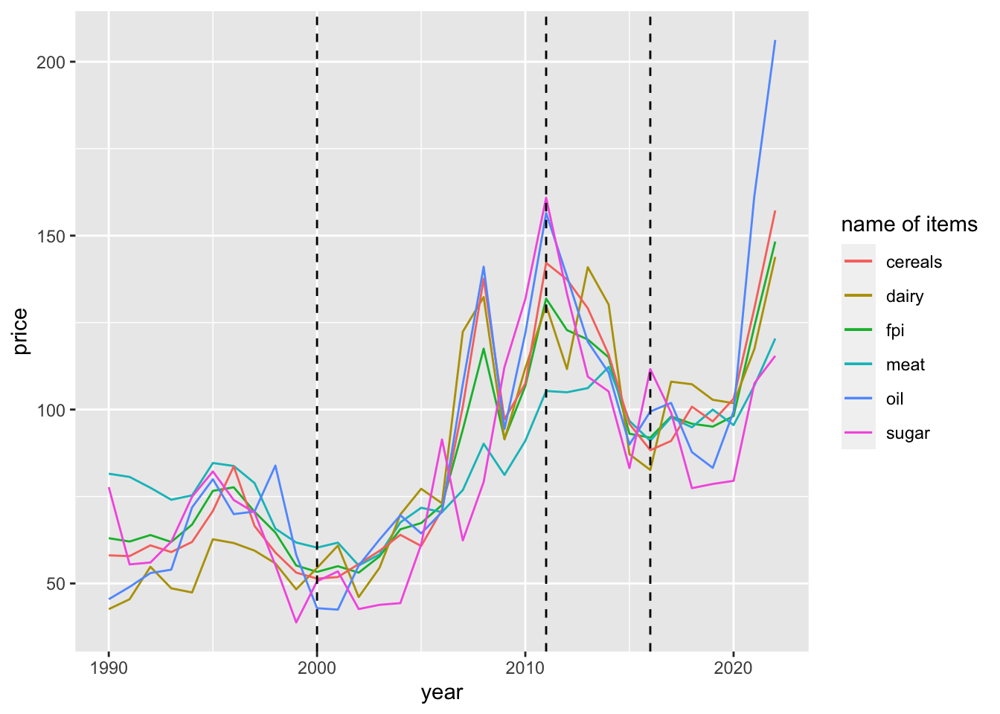

library(dplyr)
Attaching package: 'dplyr'The following objects are masked from 'package:stats':
filter, lagThe following objects are masked from 'package:base':
intersect, setdiff, setequal, unionlibrary(readr)
library(stringr)
library(lubridate)
Attaching package: 'lubridate'The following objects are masked from 'package:base':
date, intersect, setdiff, unionlibrary(reshape2)
library(ggplot2)
# data cleaning ######
data = read_csv("food_price_data.csv")Rows: 390 Columns: 1── Column specification ────────────────────────────────────────────────────────
Delimiter: ","
chr (1): Date Food.Price.Index Meat Dairy Cereals Oils Sugar
ℹ Use `spec()` to retrieve the full column specification for this data.
ℹ Specify the column types or set `show_col_types = FALSE` to quiet this message.# head(data)
# dim(data)
strsplit(as.character(data[1,1]),split = " ")[[1]]
[1] "1" "01/01/1990" "64.1" "73.4" "53.5"
[6] "64.1" "44.59" "87.9" # print(data[1,1])
data_modified = t(data.frame(apply(data, 1, function(x){strsplit(x, split = " ")})))
data_modified = as_tibble(data_modified)Warning: The `x` argument of `as_tibble.matrix()` must have unique column names if `.name_repair` is omitted as of tibble 2.0.0.
Using compatibility `.name_repair`.
This warning is displayed once every 8 hours.
Call `lifecycle::last_lifecycle_warnings()` to see where this warning was generated.dim(data_modified)[1] 390 8colnames(data_modified) = c("index","date","food price index","meat","dairy","cereals","oils","sugar")
# head(data_modified)
data_modified[,-2] = apply(data_modified[ , -2], 2,function(x) as.numeric(as.character(x)))
data_modified[,2] = mdy(sapply(data_modified[,2], function(x){strsplit(x,split = "/")}))
# head(data_modified)
year = as.numeric(format(data_modified$date,"%Y"))
data_modified = data_modified %>%
mutate(year = year,
decade = ifelse(year <= 2000,1,
ifelse(year >2000 & year<= 2011,
2,
ifelse(year >2011 & year<=2016,
3,
4))))
data_modified$decade [1] 1 1 1 1 1 1 1 1 1 1 1 1 1 1 1 1 1 1 1 1 1 1 1 1 1 1 1 1 1 1 1 1 1 1 1 1 1
[38] 1 1 1 1 1 1 1 1 1 1 1 1 1 1 1 1 1 1 1 1 1 1 1 1 1 1 1 1 1 1 1 1 1 1 1 1 1
[75] 1 1 1 1 1 1 1 1 1 1 1 1 1 1 1 1 1 1 1 1 1 1 1 1 1 1 1 1 1 1 1 1 1 1 1 1 1
[112] 1 1 1 1 1 1 1 1 1 1 1 1 1 1 1 1 1 1 1 1 1 2 2 2 2 2 2 2 2 2 2 2 2 2 2 2 2
[149] 2 2 2 2 2 2 2 2 2 2 2 2 2 2 2 2 2 2 2 2 2 2 2 2 2 2 2 2 2 2 2 2 2 2 2 2 2
[186] 2 2 2 2 2 2 2 2 2 2 2 2 2 2 2 2 2 2 2 2 2 2 2 2 2 2 2 2 2 2 2 2 2 2 2 2 2
[223] 2 2 2 2 2 2 2 2 2 2 2 2 2 2 2 2 2 2 2 2 2 2 2 2 2 2 2 2 2 2 2 2 2 2 2 2 2
[260] 2 2 2 2 2 3 3 3 3 3 3 3 3 3 3 3 3 3 3 3 3 3 3 3 3 3 3 3 3 3 3 3 3 3 3 3 3
[297] 3 3 3 3 3 3 3 3 3 3 3 3 3 3 3 3 3 3 3 3 3 3 3 3 3 3 3 3 4 4 4 4 4 4 4 4 4
[334] 4 4 4 4 4 4 4 4 4 4 4 4 4 4 4 4 4 4 4 4 4 4 4 4 4 4 4 4 4 4 4 4 4 4 4 4 4
[371] 4 4 4 4 4 4 4 4 4 4 4 4 4 4 4 4 4 4 4 4average_data = data_modified %>%
group_by(year) %>%
select(`food price index`,meat,dairy,cereals,oils,sugar) %>%
summarise(across(everything(), mean))Adding missing grouping variables: `year`print(head(average_data))# A tibble: 6 × 7
year `food price index` meat dairy cereals oils sugar
<dbl> <dbl> <dbl> <dbl> <dbl> <dbl> <dbl>
1 1990 63.0 81.6 42.6 58.1 45.5 77.7
2 1991 62.1 80.6 45.5 57.9 49.0 55.5
3 1992 63.9 77.5 54.8 61.0 53.0 56.0
4 1993 61.9 74.1 48.6 59.0 54.0 62.0
5 1994 66.9 75.3 47.4 61.9 71.9 75.0
6 1995 76.6 84.6 62.7 70.8 80.0 82.2# melt(average_data)
melted_cormat = NULL
for(i in 1:4)
{
cormat <- round(cor(data_modified[-c(1,2,9)]),2)
head(cormat)
melted = melt(cormat)
melted_cormat = rbind(melted_cormat ,cbind(melted,rep(i,nrow(melted))))
head(melted_cormat)
}
melted_cormat[,4] = as.factor(melted_cormat[,4])
colnames(melted_cormat)[4] = "decade"
ggplot(data = melted_cormat, aes(x=Var1, y=Var2, fill=value)) +
geom_tile() +
facet_grid(decade~.)
ggplot(average_data,aes(x = year))+
geom_line(aes(y = `food price index` , color="fpi")) +
geom_line(aes(y = meat , color="meat")) +
geom_line(aes(y = dairy , color="dairy")) +
geom_line(aes(y = cereals , color="cereals")) +
geom_line(aes(y = oils , color="oil")) +
geom_line(aes(y = sugar , color="sugar")) +
labs(color="name of items") +
xlab("year") +
ylab("price") +
geom_vline(xintercept = c(2000,2011,2016),linetype = "dashed", colour = "black")
#